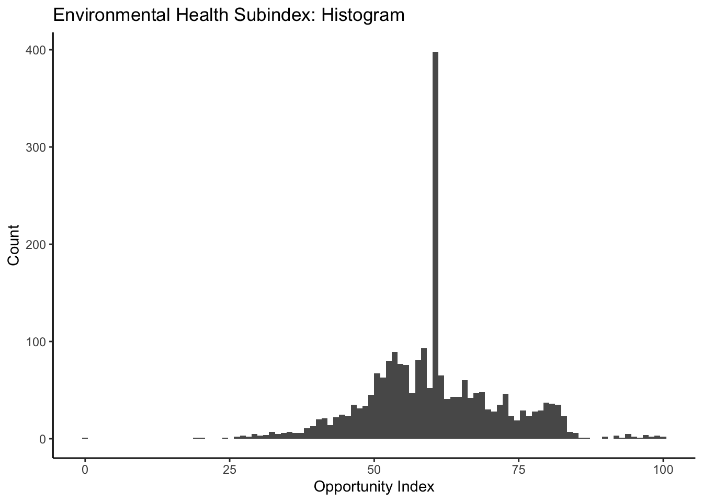

Code
DL_Year<-2020
survey <- "acs5"
state<-c("NY")
source("scripts/1_Get_ACS.R")In this lab, we’ll extend our knowledge of opportunity maps, and more generally in standardizing and creating indexes from data. This strategy is in some ways an extension of the strategy we used to measure neighborhood change. Our measurement of neighborhood change, however, focused on a single dimension of change - income. In this case, we’ll produce a multidimensional measure of change.
As we discussed in class, opportunity maps and other indexes are commonly used to be able to illustrate the distribution of resources across space and over time. These types of indexes are designed to be multidimensional, and therefore require a strong theoretical framework connecting concepts related to opportunity to indicators or measures designed to proxy or represent these concepts.
This lab introduces you to the following:
Common methods for standardizing and constructing indexes from demographic data
Basic concepts associated with relational joins between datasets
Reinforces and provides a means of practicing data visualization and presentation
across()reduce()rowwise()scale()Let’s get going…
If you have not already done so, follow this link to accept the lab Github Classroom assignment repository.
The National Housing Conference brief which you read for Tuesday outlines several suggested data sources for opportunity mapping. For the purpose of learning some of the methods associated with opportunity mapping, we’ll work with three primary data sources:
You should independently explore the documentation for these datasets and their indicators - there is a treasure trove of documentation to look at. When possible, download data documentation to your docuemtnation project folder.
We’ll divide these data into a few conceptual categories commonly seen in opportunity maps:
Education
Housing Characteristics
Social Capital
Public Health and Safety
Employment and Workforce
Transportation and Mobility
| Category | Indicator | Data Source |
|---|---|---|
| Education | Population with a High School Diploma or greater | ACS |
| Education | Population with a Bachelor’s Degree or greater | ACS |
| Housing Characteristics | Median Home Value | ACS |
| Housing Characteristics | Median Gross Rent | HUD LAI |
| Housing Characteristics | Percentage Single Family Housing Units | HUD LAI |
| Housing Characteristics | Gross Rent as Percentage of Income | ACS |
| Housing Characteristics | Housing Cost Burden | ACS |
| Housing Characteristics | Residential Vacancy Rate | ACS |
| Social Capital | Population Age 25 - 44 | ACS |
| Social Capital | Median Household Income | ACS |
| Social Capital | Percent of Households in Poverty | ACS |
| Social Capital | Percentage of Owner-Occupied Housing Units | ACS |
| Employment and Worforce | Job Density | HUD LAI |
| Employment and Worforce | Retail Density | HUD LAI |
| Transportation and Mobility | Median Commute Time | HUD LAI |
| Transportation and Mobility | Public Transit Use (Journey to work) | HUD LAI |
| Public Health and Safety | NATA Cancer Risk Index | EPA EJSCREEN (2022) |
| Public Health and Safety | NATA Respiratory Hazard Index | EPA EJSCREEN (2022) |
| Public Health and Safety | Traffic Proximity and Volume | EPA EJSCREEN (2022) |
| Public Health and Safety | Particulate Matter | EPA EJSCREEN(2022) |
I have provided download links for the EJSCREEN and LAI data. We will use tidycensus to load ACS data.
Let’s start by loading some ACS data:
DL_Year<-2020
survey <- "acs5"
state<-c("NY")
source("scripts/1_Get_ACS.R")This should look familiar - we have a script kept in the scripts folder with general code to download selected variables from the American Community Survey. Rather than placing this code in our notebook, we can use the source() command to run the script in its entirety. We are defining the variables (api_key, DL_Year, survey, state) in our notebook, so that these can be referenced when the script is running.
We have downloaded a lot of ACS data here at the census tract level for all tracts in Illinois:
| Table | Description |
|---|---|
| B01001 | Age and Population |
| B02001 | Race |
| B03001 | Ethnicity |
| B05002 | Foreign Born |
| B11001 | Female Headed Household |
| B17001 | Poverty Rate |
| B19013 | Median Household Income |
| B25002 | Residential Vacancy |
| B25003 | Housing Tenure |
| B25077 | Median Home Value |
| B25106 | Housing Cost Burden |
I went ahead and turned this raw data into some selected indicators:
| Table | Label | Description |
|---|---|---|
| B01001 | under18 | Proportion of Population under 18 |
| B01001 | over65 | Proportion of Population over 65 |
| B01001 | P_Female | Proportion of Population female |
| B01001 | Pop | Total Population size |
| B02001 | PWhite | Proportion Population White |
| B02001 | PBlack | Proportion Population Black |
| B02001 | PAIAN | Proportion Population AIAN |
| B02001 | PAsian | Proportion Population Asian |
| B02001 | PNonwhite | Proportion Population Nonwhite |
| B03001 | PLatino | Proportion Population Latino Ethnicity (Of all Races) |
| B05002 | PForeignborn | Proportion Population Foreign Born |
| B19013 | MHHI | Median Household Income |
| B11001 | P_FHHH | Proportion Female Headed Households |
| B17001 | Pov | Proportion Households Below Poverty |
| B25003 | P_Own | Proportion Owner Occupied Housing Units |
| B25077 | MHV | Median Home Value |
| B25106 | CostBurden | Housing Cost Burden |
| B25002 | Rvac | Residential Vacancy Rate |
Now that we have these individual tables downloaded, we need to combine these together into a single dataset. We’ve done this many times in the past using left_join() but only with respect to two datasets at a time. Let’s introduce an alternative strategy here, using the purrr package’s reduce() function combined with left_join().
First, here’s the way we might accomplish this as we have in the past:
acs_data<-left_join(B01001, B02001, by="GEOID")
acs_data<-left_join(acs_data, B03001, by="GEOID")
acs_data<-left_join(acs_data, B05002, by="GEOID")
acs_data<-left_join(acs_data, B11001, by="GEOID")
acs_data<-left_join(acs_data, B17001, by="GEOID")
acs_data<-left_join(acs_data, B19013, by="GEOID")
acs_data<-left_join(acs_data, B25002, by="GEOID")
acs_data<-left_join(acs_data, B25003, by="GEOID")
acs_data<-left_join(acs_data, B25077, by="GEOID")
acs_data<-left_join(acs_data, B25106, by="GEOID")This works just fine, but there’s a lot of repition of code here with so many data frames.
Now let’s look at how we can implement the same thing using reduce():
acs_data <- list(B01001, B02001, B03001, B05002, B11001, B17001, B19013, B25002, B25003, B25077, B25106) |>
reduce(left_join, by = "GEOID")In this case, we create a list containing each of the data frames we want to join together (note that we don’t put these in quotes since they’re objects and not names). We then use the reduce() command and tell reduce that we want to perform a left join and also supply the common variable name.
But what is reduce() really doing here? If you look at it’s documentation (?reduce), you’ll see that:
reduce() is an operation that combines elements of a vector into a single value. The combination is driven by .f, a binary function, and takes two values and returns a single value: Reducing f over 1:3 computes the values f(f(1,2), 3).
So if we are doing a left join, this is essentially doing the following:
acs_data <- left_join(df1, df2)
acs_data <- left_join(acs_data, df3)And on and on until reduce has iterated through all elements of the list. This helps us cut down on repetitious code.
Inspecting our handiwork, our acs_data table (for which we downloaded tract-level data for New York state has 5,411 observations and 19 variables:
str(acs_data)tibble [5,411 × 19] (S3: tbl_df/tbl/data.frame)
$ GEOID : chr [1:5411] "36011040600" "36011040700" "36011040800" "36011040900" ...
$ under18 : num [1:5411] 0.183 0.187 0.192 0.218 0.2 ...
$ over65 : num [1:5411] 0.234 0.216 0.182 0.18 0.165 ...
$ Pop : num [1:5411] 3400 3633 4668 3683 3088 ...
$ P_Female : num [1:5411] 0.504 0.518 0.419 0.476 0.456 ...
$ PWhite : num [1:5411] 0.945 0.978 0.841 0.982 0.94 ...
$ PBlack : num [1:5411] 0.037647 0 0.113325 0.000272 0 ...
$ PAIAN : num [1:5411] 0 0 0 0.000815 0.000324 ...
$ PAsian : num [1:5411] 0.00235 0 0.00771 0.00434 0.0068 ...
$ PNonwhite : num [1:5411] 0.0547 0.022 0.1594 0.0185 0.0599 ...
$ PLatino : num [1:5411] 0.01647 0.00798 0.02571 0.02607 0.04955 ...
$ PForeignborn: num [1:5411] 0.0176 0.0242 0.0176 0.0141 0.0385 ...
$ P_FHHH : num [1:5411] 0.0931 0.0486 0.089 0.0989 0.0638 ...
$ Pov : num [1:5411] 0.0507 0.049 0.0991 0.158 0.087 ...
$ MHHI : num [1:5411] 84330 93493 64811 66711 73182 ...
$ Rvac : num [1:5411] 0.0898 0.1612 0.3182 0.176 0.246 ...
$ P_Own : num [1:5411] 0.917 0.935 0.828 0.872 0.836 ...
$ MHV : num [1:5411] 186500 174900 147100 142700 147600 ...
$ CostBurden : num [1:5411] 0.224 0.206 0.283 0.246 0.172 ...While we’re at it, let’s do a little cleaning up. We have a lot of data frames which are now consolidated into acs_data. We can delete other objects from our environment using rm()
rm(B01001, B02001, B03001, B05002, B11001, B17001, B19013, B25002, B25003, B25077, B25106)Let’s download the HUD Location Affordability Index data from here. We can then load it directly.
LAI <- read_csv("data_raw/Location_Affordability_Index_v.3.csv")Rows: 73763 Columns: 444
── Column specification ────────────────────────────────────────────────────────
Delimiter: ","
chr (7): GEOID, STATE, COUNTY, TRACT, CNTY_FIPS, STUSAB, area_type
dbl (437): OBJECTID, households, owner_occupied_hu, renter_occupied_hu, pct_...
ℹ Use `spec()` to retrieve the full column specification for this data.
ℹ Specify the column types or set `show_col_types = FALSE` to quiet this message.Let’s go ahead and select the following variables (our variables of interest) and overwrite the initial file:
LAI<-LAI |> select(GEOID,
STUSAB,
pct_transit_j2w,
median_gross_rent,
pct_hu_1_detached,
job_density_simple,
retail_density_simple,
median_commute
)We can download the EJSCREEN data here. Unlike the LAI data which we could read directly from the .csv file, the EJSCREEN data will need to be downloaded and unzipped before it can be used.
We’ll use the read_csv() function from the readr package to load raw EJSCREEN data, located in the “data” folder. Load these into an object called “ejscreen”:
Inspect the data. Let’s select a subset of the variables in the data which we’ll work more with. Based upon our framework, we’ll select the following variables and overwrite the original ejscreen object with our selection:
ejscreen<-ejscreen |>
select(ID,
ACSTOTPOP,
CANCER,
RESP,
PTRAF,
PM25)Ok - we’re getting somewhere, I promise! We now have three datasets - acs_data, which contains tract-level data for New York state, LAI which contains tract-level data for the entire US, and ejscreen which contains block group level data for the US. We’re so close to joining these together and indexing the data!
One thing, though - we need to convert our ejscreen block groups data into tracts. Block groups are geographic subdivisions of tracts. Fortunately for us, Census FIPS codes are hierarchical - the combined state-county-tract-blockgroup variable called “ID” in ejscreen contains the tract FIPS code: - State (2 characters) - County (3 characters) - Tract (6 characters) - Block Group (1 character)
Ok, this is all well and good - how do we use this knowledge to combine things together? We could simply average the block group values together to approximate a tract-level average. At the same time, block groups are likely to have different populations. Given this potential heterogeneity, let’s use the population weighted average of those block group characteristics to constitute our tract characteristics.
To aggregate our block group data, we need to extract the tract characters from the ID column, and then we can group_by() and summarise our data based upon the tract FIPS code. Base R fortunately has a function called substr() (substring) which can handle the extraction for us:
ejscreen<-ejscreen |>
mutate(GEOID = substr(ID, 0, 11))What happened here? We’re creating a new column called GEOID, and then invoking substr. We tell that function that we want a substring from the ID field, and then we say 0, 11, where 0 is the first position if we were counting from the left of the first character in the ID variable, and 11 is the last character that we want (remember, the combined FIPS code is 12 characters long, and we want all but the last character).
And now we can use group_by() and summarise() to group together the data into census tract level aggregates. We can use weighted.mean() to calculate… weight for it… the weighted average (professor humor)! GEOID contains our combined state-county-tract FIPS code, ACSTOTPOP contains out population for the purpose of weighting, and we want to calculate averages for CANCER, RESP, PTRAF, and PM25. Figure out how to get that done.
Sneak preview - you’re going to hit an error - think about what rows might need to be removed to calculate a weighted average:
ejscreen<-ejscreen |>
filter(ACSTOTPOP != 0, CANCER != "None") |>
group_by(GEOID) |>
summarise(
CANCER = weighted.mean(as.numeric(CANCER), ACSTOTPOP),
RESP = weighted.mean(as.numeric(RESP), ACSTOTPOP),
PTRAF = weighted.mean(PTRAF, ACSTOTPOP),
PM25 = weighted.mean(as.numeric(PM25), ACSTOTPOP))Ok - now we have around 73,000 tract-level observations for the EPA data - not too far off from what we have for the LAI data. Both of these datasets include observations for the entire US, while our ACS data only contains observations for New York State. Using your newfound knowledge of how to join data together based upon a common column, create a new object named dataset which contains combined ACS, ejscreen, and LAI data for Illinois census tracts:
dataset<- list(acs_data, LAI, ejscreen) |> reduce(left_join, by="GEOID")
dataset |>
head() |>
gt()| GEOID | under18 | over65 | Pop | P_Female | PWhite | PBlack | PAIAN | PAsian | PNonwhite | PLatino | PForeignborn | P_FHHH | Pov | MHHI | Rvac | P_Own | MHV | CostBurden | STUSAB | pct_transit_j2w | median_gross_rent | pct_hu_1_detached | job_density_simple | retail_density_simple | median_commute | CANCER | RESP | PTRAF | PM25 |
|---|---|---|---|---|---|---|---|---|---|---|---|---|---|---|---|---|---|---|---|---|---|---|---|---|---|---|---|---|---|
| 36011040600 | 0.1829412 | 0.2341176 | 3400 | 0.5044118 | 0.9452941 | 0.0376470588 | 0.0000000000 | 0.002352941 | 0.05470588 | 0.016470588 | 0.01764706 | 0.09307876 | 0.05068672 | 84330 | 0.08979001 | 0.9172633 | 186500 | 0.2235481 | NY | 0.7344093 | 869 | 92.82640 | 0.071023683 | 0.006993935 | 16.00 | 19.70603 | 0.2238431 | 76.199249 | 6.211746 |
| 36011040700 | 0.1871731 | 0.2163501 | 3633 | 0.5183044 | 0.9779796 | 0.0000000000 | 0.0000000000 | 0.000000000 | 0.02202037 | 0.007982384 | 0.02422241 | 0.04855024 | 0.04899532 | 93493 | 0.16119910 | 0.9352664 | 174900 | 0.2063385 | NY | 0.0000000 | 787 | 94.71613 | 0.084031686 | 0.000897934 | 13.95 | 19.58912 | 0.2248577 | 8.835063 | 6.179412 |
| 36011040800 | 0.1919452 | 0.1820908 | 4668 | 0.4190231 | 0.8406170 | 0.1133247644 | 0.0000000000 | 0.007712082 | 0.15938303 | 0.025706941 | 0.01756641 | 0.08900524 | 0.09908915 | 64811 | 0.31816154 | 0.8278796 | 147100 | 0.2827225 | NY | 0.1046997 | 621 | 75.63869 | 0.021437169 | 0.003085479 | 20.63 | 17.56237 | 0.1972023 | NA | 6.092557 |
| 36011040900 | 0.2180288 | 0.1802878 | 3683 | 0.4759707 | 0.9815368 | 0.0002715178 | 0.0008145534 | 0.004344285 | 0.01846321 | 0.026065707 | 0.01411892 | 0.09890110 | 0.15799510 | 66711 | 0.17600453 | 0.8722527 | 142700 | 0.2458791 | NY | 0.1057314 | 733 | 70.25913 | 0.004264647 | 0.000176875 | 18.12 | 17.22243 | 0.1934044 | NA | 6.108516 |
| 36011041001 | 0.2001295 | 0.1648316 | 3088 | 0.4562824 | 0.9400907 | 0.0000000000 | 0.0003238342 | 0.006800518 | 0.05990933 | 0.049546632 | 0.03853627 | 0.06375839 | 0.08699902 | 73182 | 0.24604681 | 0.8355705 | 147600 | 0.1719799 | NA | NA | NA | NA | NA | NA | NA | NA | NA | NA | NA |
| 36011041002 | 0.1115152 | 0.1921212 | 1650 | 0.4678788 | 0.8909091 | 0.0151515152 | 0.0042424242 | 0.013333333 | 0.10909091 | 0.065454545 | 0.02424242 | 0.04838710 | 0.09794239 | 79167 | 0.35416667 | 0.8440860 | 169900 | 0.1487455 | NA | NA | NA | NA | NA | NA | NA | NA | NA | NA | NA |
Now that we have our base dataset together, we can filter to our area of interest, in this case, the boroughs that make up New York City:
| FIPS Code | County Name | Borough Name |
|---|---|---|
| 36047 | Kings County | Brooklyn |
| 36005 | Bronx County | Bronx |
| 36081 | Queens County | Queens |
| 36085 | Richmond County | Staten Island |
| 36061 | New York County | Manhattan |
dataset <- dataset |>
filter(substr(GEOID, 0, 5) %in% c("36047", "36005", "36081", "36085", "36061"))The above code uses substr() to pull out the first 5 characters from the GEOID field (the combined state and county FIPS codes) and then matches them against the FIPS codes for the five boroughs of New York City.
Remembering back to your high school or college statistics class, a Z-score (or standardized score) can be be calculated by subtracting from a given observation the mean of all observations and then dividing by the standard deviation of all observations.
Recall:
\(z = \frac{x-\mu}{\sigma}\) where: \(x\) is the individual observation we want to standardize \(\mu\) is the population mean \(\sigma\) is the population standard deviation
Find the mean and standard deviation for a variable in our dataset and manually calculate a z-score (just for fun).
dataset |>
summarise(
under18_mean = mean(under18, na.rm=TRUE),
under18_sd = sd(under18, na.rm=TRUE),
z_under18 = (under18 - under18_mean)/under18_sd
)Warning: Returning more (or less) than 1 row per `summarise()` group was deprecated in
dplyr 1.1.0.
ℹ Please use `reframe()` instead.
ℹ When switching from `summarise()` to `reframe()`, remember that `reframe()`
always returns an ungrouped data frame and adjust accordingly.# A tibble: 2,327 × 3
under18_mean under18_sd z_under18
<dbl> <dbl> <dbl>
1 0.205 0.0773 0.960
2 0.205 0.0773 1.98
3 0.205 0.0773 0.572
4 0.205 0.0773 -0.254
5 0.205 0.0773 0.980
6 0.205 0.0773 0.706
7 0.205 0.0773 -0.253
8 0.205 0.0773 0.865
9 0.205 0.0773 -0.00949
10 0.205 0.0773 0.539
# ℹ 2,317 more rowsFor the first observation, the value for Under 18 is 27.9 percent. The average value for tracts in Illinois is 27.9 percent, and the standard deviation is 7.73. The standardized score of .960 indicates that the observation is .96 of a standard deviation above the mean. There’s absolutely nothing wrong with doing this manually, however, we can use the scale() function to do the same thing:
dataset |>
mutate(under18 = scale(under18))# A tibble: 2,327 × 30
GEOID under18[,1] over65 Pop P_Female PWhite PBlack PAIAN PAsian
<chr> <dbl> <dbl> <dbl> <dbl> <dbl> <dbl> <dbl> <dbl>
1 36047009202 0.960 0.0747 3453 0.514 0.296 0.0568 0.00782 0.300
2 36047009401 1.98 0.0763 2293 0.515 0.0754 0.0754 0 0.690
3 36047009402 0.572 0.0885 2746 0.548 0.172 0.0138 0 0.695
4 36047009600 -0.254 0.132 5858 0.570 0.362 0.0446 0.00751 0.340
5 36047009800 0.980 0.0864 6021 0.498 0.153 0.0485 0 0.383
6 36047010000 0.706 0.128 5978 0.541 0.264 0.0238 0.0110 0.423
7 36047010100 -0.253 0.0842 3944 0.508 0.510 0.0418 0.0327 0.0903
8 36047010200 0.865 0.126 4844 0.515 0.124 0.0142 0 0.705
9 36047010401 -0.00949 0.125 2152 0.487 0.106 0.0279 0 0.838
10 36047010402 0.539 0.148 2256 0.523 0.0638 0 0 0.879
# ℹ 2,317 more rows
# ℹ 21 more variables: PNonwhite <dbl>, PLatino <dbl>, PForeignborn <dbl>,
# P_FHHH <dbl>, Pov <dbl>, MHHI <dbl>, Rvac <dbl>, P_Own <dbl>, MHV <dbl>,
# CostBurden <dbl>, STUSAB <chr>, pct_transit_j2w <dbl>,
# median_gross_rent <dbl>, pct_hu_1_detached <dbl>, job_density_simple <dbl>,
# retail_density_simple <dbl>, median_commute <dbl>, CANCER <dbl>,
# RESP <dbl>, PTRAF <dbl>, PM25 <dbl>This brings up an important question - what should the reference geography be for our opportunity measures? We narrowed down our dataset to New York City, however, we could have just as easily used the state or the nation. It’s important to keep in mind that once we construct Z-scores for our indicators, they are with reference to the distribiotn of values we choose to include. We are using the city of New York City as our point of reference. Using the state as a point of reference may be relevant and useful, especially if we want to make some comparisons across the state. At the same time, the characteristics of New York City and other metropolitan areas are likely to be very different than the balance of the state, and so comparisons for the purpose of standardizing our data may be a bit distorted. Now that we have our reference region selected, we can move forward with standardizing each indicator value.
Before we do this, it can be useful to provide a more intuitive description of each variable (since most people do not think about indicators in standardized terms). You may recall us previously using commands like summary() for basic descriptives.
We’re going to use a variant of the summarise command which you’ve used in the past. summarise_at() allows us to select variables to summarise by their name, and will then apply the same function across all of those variables. Let’s find the mean for each of the indicator variables in our compiled dataset:
dataset |>
summarise_at(vars(under18:median_commute), mean, na.rm=TRUE)# A tibble: 1 × 25
under18 over65 Pop P_Female PWhite PBlack PAIAN PAsian PNonwhite PLatino
<dbl> <dbl> <dbl> <dbl> <dbl> <dbl> <dbl> <dbl> <dbl> <dbl>
1 0.205 0.151 3601. 0.519 0.410 0.250 0.00443 0.148 0.590 0.271
# ℹ 15 more variables: PForeignborn <dbl>, P_FHHH <dbl>, Pov <dbl>, MHHI <dbl>,
# Rvac <dbl>, P_Own <dbl>, MHV <dbl>, CostBurden <dbl>, STUSAB <dbl>,
# pct_transit_j2w <dbl>, median_gross_rent <dbl>, pct_hu_1_detached <dbl>,
# job_density_simple <dbl>, retail_density_simple <dbl>, median_commute <dbl>We use vars() to specify the variables to summarize by their name, using the colon to specify through (e.g. under18 through median_commute). We specify that we want our summary statistic to be the mean, and we specify that we want to remove NAs so we get a usable statistic out. This gives us some usable statistics for the entire region. We might also want to derive summaries for each of the counties in the region - how could we do this using your knowledge of group_by(), substr(), and summarise_at()?
dataset |>
group_by(substr(GEOID, 0, 5)) |>
summarise_at(vars(under18:median_commute), mean, na.rm=TRUE)Warning: There were 5 warnings in `summarise()`.
The first warning was:
ℹ In argument: `STUSAB = (function (x, ...) ...`.
ℹ In group 1: `substr(GEOID, 0, 5) = "36005"`.
Caused by warning in `mean.default()`:
! argument is not numeric or logical: returning NA
ℹ Run `dplyr::last_dplyr_warnings()` to see the 4 remaining warnings.# A tibble: 5 × 26
`substr(GEOID, 0, 5)` under18 over65 Pop P_Female PWhite PBlack PAIAN
<chr> <dbl> <dbl> <dbl> <dbl> <dbl> <dbl> <dbl>
1 36005 0.241 0.134 3953. 0.528 0.235 0.344 0.00712
2 36047 0.224 0.144 3201. 0.524 0.430 0.313 0.00320
3 36061 0.134 0.167 5255. 0.520 0.570 0.142 0.00342
4 36081 0.195 0.160 3132. 0.509 0.355 0.200 0.00528
5 36085 0.215 0.160 3775. 0.513 0.688 0.124 0.00231
# ℹ 18 more variables: PAsian <dbl>, PNonwhite <dbl>, PLatino <dbl>,
# PForeignborn <dbl>, P_FHHH <dbl>, Pov <dbl>, MHHI <dbl>, Rvac <dbl>,
# P_Own <dbl>, MHV <dbl>, CostBurden <dbl>, STUSAB <dbl>,
# pct_transit_j2w <dbl>, median_gross_rent <dbl>, pct_hu_1_detached <dbl>,
# job_density_simple <dbl>, retail_density_simple <dbl>, median_commute <dbl>You can start to see some of the differences that exist between distributions at the borough (county) level. Do any stick out to you at this point?
Ok, we have created a numeric summary table that may be useful for reporting out. Now we can produce our standardized scores which we can use for index making.
Now that you have defined your region, described the data for your region, and know how to standardize the values, you can create a scaled version of your data. Earlier, we learned how to use summarise_at() to select variables to summarize using a specific function. There’s also a mutate_at() function which allows you to perform the same alteration upon all of the variables you select. Take a look at the documentation for mutate_at(). You’ll need to supply the variables you want to mutate, as well as the function (read closely the documentation and examples before proceeding).
Now let’s go ahead and create a separate dataset called dataset_scaled which contains the scaled values (there may a few fields which either do not need scaling or who you can remove):
dataset_scaled<-dataset |>
mutate_at(vars(under18, over65, P_Female, PNonwhite, PForeignborn, P_FHHH, Pov, MHHI, P_Own, MHV, CostBurden, CANCER, RESP, PTRAF, PM25, pct_transit_j2w, median_gross_rent, pct_hu_1_detached, job_density_simple, retail_density_simple, median_commute), list(scale=scale))We are in the home stretch! We are very close to being able to make our index. We need to determine how we think each variable is related to opportunity. In some cases, higher values are “good” (more favorable), and in some cases, lower values are “good”. We need to make sure that those values are all moving in the same direction so that when we combine them they do not counter-act each other.
Below is a table proposing potential directions for each variable.
| Variable | Description | Relationship to Opportunity | Category |
|---|---|---|---|
| under18 | Proportion of Population under 18 | Negative | Demographic Structure |
| over65 | Proportion of Population over 65 | Negative | Demographic Structure |
| PNonwhite | Proportion Population Nonwhite | Negative | Demographic Structure |
| PForeignborn | Proportion Population Foreign Born | Negative | Demographic Structure |
| MHHI | Median Household Income | Positive | Employment and Economy |
| P_FHHH | Proportion Female Headed Households | Negative | Demographic Structure |
| Pov | Proportion Households Below Poverty | Negative | Demographic Structure |
| P_Own | Proportion Owner Occupied Housing Units | Positive | Housing |
| MHV | Median Home Value | Positive | Housing |
| CostBurden | Housing Cost Burden | Negative | Housing |
| CANCER | Cancer Risk Index | Negative | Environmental Health |
| RESP | Respiratory Hazard Index | Negative | Environmental Health |
| PTRAF | Traffic Proximity Index | Negative | Environmental Health |
| PM25 | Particulate Matter Index | Negative | Environmental Health |
| pct_transit_j2w | Commuting by Public Transportation | Positive | Transportation |
| median_gross_rent | Median Gross Rent | Negative | Housing |
| pct_hu_1_detatched | Detatched Housing Units | Positive | Housing |
| job_density_simple | Job Density | Positive | Employment and Economy |
| retail_density_simple | Retail Density | Positive | Employment and Economy |
| median_commute | Median Commute Time | Negative | Transportation |
We are going to create an **additive* index, where standardized values are simply added together. We can transform values so that they are moving in the same direction by simply switching the sign on values that need to be reversed (e.g. multiply by -1). Based upon the above table, Here’s what that would look like:
dataset_scaled<-dataset_scaled |> mutate(
under18_scale = under18_scale*-1,
over65_scale = over65_scale*-1,
PNonwhite_scale = PNonwhite_scale*-1,
PForeignborn_scale = PForeignborn_scale*-1,
P_FHHH_scale = P_FHHH_scale*-1,
Pov_scale = Pov_scale*-1,
CostBurden_scale = CostBurden_scale *-1,
CANCER_scale = CANCER_scale*-1,
RESP_scale = RESP_scale*-1,
PTRAF_scale = PTRAF_scale*-1,
PM25_scale = PM25_scale*-1,
median_gross_rent_scale = median_gross_rent_scale*-1,
median_commute_scale = median_commute_scale*-1
)By making these changes, once we add up our indicator values, we are essentially saying that larger values are indicative of greater opportunity and smaller values are indicative of less opportunity. Let’s do two things here - we can add up all of our values to get an overall opportunity score, but let’s also create sub-indicators for each category, as this may be useful information for us to observe.
To do this, add several new variables to dataset_scaled that sum together each of the index measures by category, and then create a separate indicator that sums up those category columns into an overall opportunity measure:
Use the following labels:
dataset_scaled<-dataset_scaled |>
rowwise() |>
mutate(
dem_index = sum(under18_scale, over65_scale, PNonwhite_scale, PForeignborn_scale, P_FHHH_scale, Pov_scale, na.rm=TRUE),
emp_index = sum(MHHI_scale, job_density_simple_scale, retail_density_simple_scale, na.rm=TRUE),
hou_index = sum(P_Own_scale, MHV_scale, CostBurden_scale, median_gross_rent_scale, pct_hu_1_detached_scale, na.rm=TRUE),
env_index = sum(CANCER_scale, RESP_scale, PTRAF_scale, PM25_scale, na.rm=TRUE),
tra_index = sum(pct_transit_j2w_scale, median_commute_scale,na.rm=TRUE),
tot_index = dem_index + emp_index + hou_index + env_index + tra_index
) Something’s a little different here that makes a big difference. Did you notice rowwise()? Typically, if we were to ask dplyr to mutate by providing a sum, it would do so by column. rowwise() modifies this and asks for something to happen across a data observation (row) instead of by column. Therefore, when we ask in a mutate statement for the sum of values, we are asking R to add up the values in the same row and then insert the product into a new variable (in this case our named indexes). Pretty cool, right?
Ok - now we have subindex values as well as a total index value. We could analyze these and interpret them as is, but there’s one more thing that we might do to make these easier to interpret. Let’s quickly look at some descriptive stats for our index values and think about what may be challenging for us to interpret:
dataset_scaled |>
select(dem_index, emp_index, hou_index, env_index, tra_index, tot_index) |>
summary() dem_index emp_index hou_index env_index
Min. :-10.7759 Min. :-2.4750 Min. :-7.3245 Min. :-14.084
1st Qu.: -2.1811 1st Qu.:-0.8973 1st Qu.:-1.5020 1st Qu.: -1.639
Median : -0.1554 Median :-0.3840 Median :-0.1535 Median : 0.000
Mean : 0.0000 Mean : 0.0000 Mean : 0.0000 Mean : 0.000
3rd Qu.: 2.1316 3rd Qu.: 0.1484 3rd Qu.: 1.1933 3rd Qu.: 1.443
Max. : 11.8808 Max. :31.0470 Max. :10.5857 Max. : 9.302
tra_index tot_index
Min. :-6.7759 Min. :-19.994
1st Qu.:-0.8376 1st Qu.: -3.762
Median : 0.0000 Median : 0.000
Mean : 0.0000 Mean : 0.000
3rd Qu.: 1.1383 3rd Qu.: 3.605
Max. : 3.3514 Max. : 35.604 Looking at this, there are a few challenges:
One strategy for making these values more interpretable is to rescale them. Do not confuse rescaling with the type of standardizing which we previously performed by converting our indicator values into z scores. Rescaling will take the data from an existing range and convert it to a new range of values.
Rescaling converts our data from its existing range of values to a new range of values, preserving the magnitude of difference that exists between the values:
If we want to convert our data to the range [0,1] here’s what we’d do: \(x_{rescaled} = \frac{x-min(x)}{max(x)-min(x)}\)
We can also convert our data to an arbitrary range. Let’s try 0,100: \(x_{rescaled} = a+\frac{x-min(x)(b-a)}{max(x) -min(x)}\)
Fortunately, R has us covered here too - the rescale function in the scales package will rescale to whatever range we wish:
library(scales)
Attaching package: 'scales'The following object is masked from 'package:purrr':
discardThe following object is masked from 'package:readr':
col_factordataset_scaled <-dataset_scaled |>
ungroup() |>
mutate(dem_index = rescale(dem_index, to = c(0,100)),
emp_index = rescale(emp_index, to = c(0,100)),
hou_index = rescale(hou_index, to = c(0,100)),
env_index = rescale(env_index, to = c(0,100)),
tra_index = rescale(tra_index, to = c(0,100)),
tot_index = rescale(tot_index, to = c(0,100))
)
dataset_scaled |>
select(dem_index, emp_index, hou_index, env_index, tra_index, tot_index) |>
summary() dem_index emp_index hou_index env_index
Min. : 0.00 Min. : 0.000 Min. : 0.00 Min. : 0.00
1st Qu.: 37.93 1st Qu.: 4.707 1st Qu.: 32.51 1st Qu.: 53.22
Median : 46.88 Median : 6.238 Median : 40.04 Median : 60.23
Mean : 47.56 Mean : 7.383 Mean : 40.90 Mean : 60.23
3rd Qu.: 56.97 3rd Qu.: 7.826 3rd Qu.: 47.56 3rd Qu.: 66.40
Max. :100.00 Max. :100.000 Max. :100.00 Max. :100.00
tra_index tot_index
Min. : 0.00 Min. : 0.00
1st Qu.: 58.64 1st Qu.: 29.20
Median : 66.91 Median : 35.96
Mean : 66.91 Mean : 35.96
3rd Qu.: 78.15 3rd Qu.: 42.45
Max. :100.00 Max. :100.00 The values are all rescaled so that the minimum is now zero and the maximum value is 100. We use ungroup() here so that if we have used group_by() in the past, R ignores those past groupings when we rescale. Looking at the descriptive statistics for these variables, there’s still some skew in many cases. We might want to try visualizing these distributions so that we can better understand their implications.
Let’s start our data visualization by making a simple histogram of values for our tot_index measure:
ggplot(data=dataset_scaled, aes(x=tot_index))+geom_histogram()What’s going on here? We call ggplot (ggplot()) and then start adding layers to our plot. In its most basic form, ggplot needs to know the data source, as well as some aesthetic mappings for the data. The data source can be called by name, and the aesthetic mappings are placed in aes()'. After this, we can specify a format for our plot by asking it to plot using a particular geometry, in this casegeom_histogram()`.
You have probably observed that ggplot tells us that it is using a somewhat arbitrary bin width for our histogram. We can select another one by adding to the histogram geometry a specification for a different number of bins:
ggplot(data=dataset_scaled, aes(x=tot_index))+geom_histogram(bins=100)Notice, we go from 30 bins to 100 bins, meaning that they become much narrower as each captures and counts a smaller range of the data.
We can add other elements to our plot that help to make it look nice:
ggplot(data=dataset_scaled, aes(x=tot_index))+geom_histogram(bins=100)+
labs(title = "Opportunity Index: Histogram", x="Opportunity Index", y="Count")+
theme_classic()
Have a look at the ggplot2 cheat sheet for some inspiration on how you can alter your plots further.
Let’s produce similar histograms for each of the subindex components. Feel free to play around with some of the aesthetics just for fun!
ggplot(data=dataset_scaled, aes(x=dem_index))+geom_histogram(bins=100)+
labs(title = "Demographic Structure Subindex: Histogram", x="Opportunity Index", y="Count")+
theme_classic()
ggplot(data=dataset_scaled, aes(x=emp_index))+geom_histogram(bins=100)+
labs(title = "Employment and Economy Subindex: Histogram", x="Opportunity Index", y="Count")+
theme_classic()ggplot(data=dataset_scaled, aes(x=hou_index))+geom_histogram(bins=100)+
labs(title = "Housing Subindex: Histogram", x="Opportunity Index", y="Count")+
theme_classic()
ggplot(data=dataset_scaled, aes(x=env_index))+geom_histogram(bins=100)+
labs(title = "Environmental Health Subindex: Histogram", x="Opportunity Index", y="Count")+
theme_classic()
ggplot(data=dataset_scaled, aes(x=tra_index))+geom_histogram(bins=100)+
labs(title = "Transportation Subindex: Histogram", x="Opportunity Index", y="Count")+
theme_classic()
Referring back to the ggplot2 cheat sheet, try your hand at some other one variable visualizations (good places to start would be geom_area, geom_density, and geom_bar:
ggplot(data=dataset_scaled, aes(x=tra_index))+geom_area(stat="bin", bins=100)+
labs(title = "Transportation Subindex: Histogram", x="Opportunity Index", y="Count")+
theme_classic()Let’s take a look at our overall opportunity index again:
ggplot(data=dataset_scaled, aes(x=tot_index))+geom_histogram(bins=100)+
labs(title = "Opportunity Index: Histogram", x="Opportunity Index", y="Count")+
theme_classic()
How might we start to think about some of the demographic correlates of who lives in places with higher aggregate opportunity and lower aggregate opportunity? You’ll recall from when we initially created our index that we had downloaded some information on race and ethnicity which was not incorporated into our opportunity measures. We might be interested to see how our composite measure of low and high opportunity are related to the racial and ethnic composition of the census tracts they are from.
We might turn towards a some bivariate visualizations to help us here. Let’s start with a simple scatterplot:
ggplot(data=dataset_scaled, aes(x=PWhite, y =tot_index))+geom_point()
How would you describe the relationship visualized here (note that I shifted the index values to the y scale and placed percent white on the x scale)? To make it easier, let’s add another geometry to the same plot, in this case, by fitting a line to our data:
ggplot(data=dataset_scaled, aes(x=PWhite, y =tot_index))+geom_point()+geom_smooth(method = "lm")How would you describe the relationship between the tract-level concentration of the white population and the overall index score?
We might want to polish things up a little more - here are some suggested additions to think about.
ggplot(data=dataset_scaled, aes(x=PWhite, y =tot_index))+
geom_point(alpha = .6, cex = .75)+ # Use alpha to control the transparency of the points and cex to control their size
geom_smooth(method = "lm")+
labs(x="White (%)", y = "Combined Opportunity Index")+ # Add labels to the x and y axes
scale_x_continuous(labels = scales::percent)+ # Use the scales package to convert X-axis to percentages
theme_minimal() #Use themes to eliminate extra shading on plots
Your turn - produce similar plots for the Black, Asian, and Latino populations:
ggplot(data=dataset_scaled, aes(x=PBlack, y =tot_index))+geom_point()+geom_smooth(method = "lm")
ggplot(data=dataset_scaled, aes(x=PAsian, y =tot_index))+geom_point()+geom_smooth(method = "lm")ggplot(data=dataset_scaled, aes(x=PLatino, y =tot_index))+geom_point()+geom_smooth(method = "lm")
So far, we’ve been looking at opportunity scores for the New York City. The values we see are likely to be very different for different boroughs. Let’s disaggregate and make some comparisons.
As a reminder, here are the county FIPS codes for the boroughs in the city:
| FIPS Code | County Name | Borough Name |
|---|---|---|
| 36047 | Kings County | Brooklyn |
| 36005 | Bronx County | Bronx |
| 36081 | Queens County | Queens |
| 36085 | Richmond County | Staten Island |
| 36061 | New York County | Manhattan |
Let’s label each tract by the borough (county) that contains it.
We used case_when() in the past. case_when() allows us to set up multiple conditions to search for, and then we can determine what to do when we have found records which match that condition:
dataset_scaled<-dataset_scaled |>
mutate(location = case_when(
substr(GEOID, 0,5) == "36047" ~ "Brooklyn",
substr(GEOID, 0,5) == "36005" ~ "Bronx",
substr(GEOID, 0,5) == "36081" ~ "Queens",
substr(GEOID, 0,5) == "36085" ~ "Staten Island",
substr(GEOID, 0,5) == "36061" ~ "Manhattan"
))In this case, we create a new variable called location, and then label those records where the county FIPS code is equal to a particular county.
Now that we have this new differentiating variable, we can modify our existing plots to illustrate differences between boroughs. We can start by faceting our existing chart. Facets take categorical variables and split the chart into as many multiples as there are categories. In our case, we can use our new location variable as a facet, so we should expect five multiples in an updated chart:
ggplot(data=dataset_scaled, aes(x=tot_index))+geom_histogram(bins=100)+
labs(title = "Opportunity Index: Histogram", x="Opportunity Index", y="Count")+
theme_classic()+
facet_wrap(~location)The tilde (~) is necessary before listing the variable you want to facet.
This gives us a sense of the relative shape and distribution of opportunity index values for each county. As an alternative strategy to use our facets, we might want to set our scales to “free” in our histogram settings so that we can better compare the shape of our histograms. The distortion we see is due to Brooklyn and Queens having more tracts, thereby creating higher peaks within any given bin. By setting scales to “free”, ggplot sets the scales based upon the range of data contained only within a given facet instead of across all facets:
ggplot(data=dataset_scaled, aes(x=tot_index))+geom_histogram(bins=100)+
labs(title = "Opportunity Index: Histogram", x="Opportunity Index", y="Count")+
theme_classic()+
facet_wrap(~location, scales = "free")
What can this tell us about the distribution of opportunity scores within each borough in New York City?
Now go ahead and re-create the scatterplot we previously created that compared the White population on the x axis to the overall opportunity index score on the y axis. Be sure to facet by location. Go ahead and add a summary line of best fit as well.
ggplot(data=dataset_scaled, aes(x=PWhite, y =tot_index))+geom_point()+geom_smooth(method = "lm")+
facet_wrap(~location)+
theme_minimal()Let’s try faceting subindex values to see how they differ. Are there any that you can see any substantial visual differences on? How would you explain the differences that you see?
ggplot(data=dataset_scaled, aes(x=PWhite, y =dem_index))+geom_point()+geom_smooth(method = "lm")+
facet_wrap(~location)ggplot(data=dataset_scaled, aes(x=PWhite, y =emp_index))+geom_point()+geom_smooth(method = "lm")+
facet_wrap(~location)ggplot(data=dataset_scaled, aes(x=PWhite, y =hou_index))+geom_point()+geom_smooth(method = "lm")+
facet_wrap(~location)
ggplot(data=dataset_scaled, aes(x=PWhite, y =env_index))+geom_point()+geom_smooth(method = "lm")+
facet_wrap(~location)ggplot(data=dataset_scaled, aes(x=PWhite, y =tra_index))+geom_point()+geom_smooth(method = "lm")+
facet_wrap(~location)
So far, we have learned how to display fit regression lines on top of our point data. Sometimes, it can be useful to simply display those lines without the associated point data. As part of our aesthetic mapping, we can set a grouping variable (group), and also tell ggplot to vary the colour (British spelling, please) of each group. In this case, we set both of these based upon the location variable:
ggplot(data=dataset_scaled, aes(x=PWhite, y =tot_index, group=location, colour=location))+geom_smooth(method = "lm")+
theme_minimal()
How would you interpret the differences between the two lines (without points)? Can you re-create similar graphics for some of the subindex categories or other racial identifications?
Finally, let’s combine some of what we’ve learned here to visualize groups for both the point data and the associated regression lines:
ggplot(data=dataset_scaled, aes(x=PWhite, y =tot_index, group=location, colour=location))+
geom_point(alpha=.075)+
geom_smooth(method = "lm", se=FALSE, alpha = .1)+
labs(x = "White Population (%)", y = "Opportunity Index", colour = "County")+
scale_x_continuous(labels = scales::percent)+
theme_classic()
I have used theme_classic() here to remove the gray background which I think makes it difficult to see the points and lines well. In the point geometries, I have used the alpha value to alter the transparency of the points. This can help us to see some of the differences between boroughs. If you look carefully, you’ll also see that there is a rather dense cluster of tracts that are mostly non-white with relatively high opportunity scores in Queens. In this chart, we can also see how those tracts with a high proportion of white people and high index values are what is likely bringing up the slope of the regression line for the total index.
Spend some time playing around with these visualizations using different aesthetic mappings and different x and y variables. Think about how you can creatively layer different components and also about the types of stories that you can tell about opportunity in Illinois.
The most standard next step in opportunity mapping is…
In evaluating your lab submission, we’ll be paying attention to the following:
As you get into the lab, please feel welcome to ask us questions, and please share where you’re struggling with us and with others in the class.